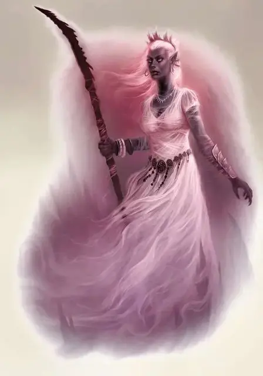

Дроу верховная мать
Drow Matron Mother
Средний Гуманоид (Эльф, Жрец), обычно нейтрально-злой

Класс Доспеха 17 (полулаты)
Хиты 247 (33к8 + 99)
Скорость 30 футов
| мод | спас | ||
|---|---|---|---|
| СИЛ | 12 | +1 | +1 |
| ЛОВ | 18 | +4 | +4 |
| ТЕЛ | 16 | +3 | +9 |
| мод | спас | ||
|---|---|---|---|
| ИНТ | 17 | +3 | +3 |
| МДР | 21 | +5 | +11 |
| ХАР | 22 | +6 | +12 |
Навыки Восприятие +11, Проницательность +11, Религия +9, Скрытность +10
Иммунитет к состояниям отравление, очарование, испуг
Чувства тёмное зрение 120 футов, пассивное Восприятие 21
Языки Подземный, Эльфийский
Опасность 20 (25000 опыта)
Бонус мастерства +6
Среда обитания Подземье
Особенности
Особое снаряжение. Верховная мать использует жезл щупалец [tentacle rod].
Наследие фей. Дроу совершает с преимуществом спасброски от очарования, и магия не может его усыпить.
Чувствительность к солнечному свету. Находясь на солнечном свету, дроу совершает с помехой броски атаки, а также проверки Мудрости (Восприятие), полагающиеся на зрение.
Действия
Мультиатака. Верховная мать совершает две атаки Демоническим посохом, или одну атаку Демоническим посохом и три атаки Жезлом щупалец.
Демонический посох. Рукопашная атака оружием: +10 к попаданию, досягаемость 5 футов, одна цель. Попадание: 7 (1к6 + 4) дробящего урона, или 8 (1к8 + 4) дробящего урона при ударе двумя руками, плюс 14 (4к6) урона психической энергией. Кроме того, цель должна преуспеть в спасброске Мудрости Сл 19, иначе станет испуганной дроу на 1 минуту. Испуганная цель может повторять спасбросок в конце каждого своего хода, завершая эффект в случае успеха.
Жезл из щупалец. Рукопашная атака оружием: +9 к попаданию, досягаемость 15 футов, одна цель. Попадание: 3 (1к6) дробящего урона. Если все три щупальца поразили цель во время одного хода, она должна преуспеть в спасброске Телосложения Сл 15, иначе пострадает от следующих эффектов на протяжение 1 минуты: её скорость ходьбы сократится вдвое, она совершает спасброски Ловкости с помехой, а также она не сможет совершать реакции. Более того, на каждом её ходу она сможет совершать либо Действие, либо Бонусное действие, но не оба сразу. В конце каждого хода цели она может повторить спасбросок, завершая эффект при успехе.
Божественное пламя (2/день). Столб божественного огня радиусом 10 футов и высотой 40 футов вырывается на расстоянии до 120 футов от дроу. Каждое существо в этой области должно совершить спасбросок Ловкости Сл 20, получая 14 (4к6) урона огнём и 14 (4к6) урона излучением при провале или половину этого урона в случае успеха.
Использование заклинаний. Верховная мать накладывает одно из следующих заклинаний используя Харизму в качестве базовой характеристики и без использования материальных компонентов (Сл спасброска от заклинаний 20):
• Неограниченно: приказ [command], пляшущие огоньки [dancing lights], обнаружение магии [detect magic], чудотворство [thaumaturgy];
• 2/день каждое: изгнание [banishment], стена клинков [blade barrier], лечение ран [cure wounds], удержание личности [hold person], уход в иной мир [plane shift], тишина [silence];
• 1/день каждое: подсматривание [clairvoyance], тьма [darkness], обнаружение мыслей [detect thoughts], рассеивание магии [dispel magic], огонь фей [faerie fire], врата [gate], левитация [levitate] (только на себя), внушение [suggestion].
Бонусные действия
Изменчивая благосклонность Лолс. Бонусным действием верховная мать посылает благословение Паучьей Королевы на одного союзника в пределах 30 футов от себя. Союзник получает 7 (2к6) урона психической энергией, но также получает преимущество на следующий бросок атаки, который совершит до конца своего следующего хода.
Призыв слуги (1/день). Дроу магически призывает глабрезу [glabrezu] или йоклола [yochlol]. Призванное существо появляется в свободном пространстве в пределах 60 футов от призывателя, действует как союзник призывателя и не может самостоятельно призывать прочих демонов. Оно существует 10 минут, или пока не погибнет, или же пока призыватель не отпустит его действием.
Легендарные действия
Верховная мать может совершать три легендарных действия, делая выбор из нижеприведённого перечня. Только одно легендарное действие может быть выполнено за раз и только в конце хода другого существа. Верховная мать восстанавливает потраченные легендарные действия в начале своего хода.
Демонический посох. Дроу совершает атаку Демоническим посохом.
Подчинение демона. Союзный демон в пределах 30 футов от дроу использует реакцию для совершения одной атаки против цели по выбору дроу, которую она может видеть.
Наложение заклинания (стоит 2 действия). Верховная мать накладывает заклинание с помощью Использования заклинаний.
Логово
Дворец верховной матери дроу — её дом и крепость. Символы по всему зданию позволяют верховной матери использовать следующие действия логова, находясь внутри него.
Любой храм Лолс также функционирует как логово верховной матери, пока она находится внутри него, если только она не отреклась от Лолс или не присутствует другая верховная мать. Когда две или более верховных матерей собираются в храме своей богини, ни одна из них не может использовать его в качестве своего логова.
Действия логова
При значении инициативы «20» (проигрыш при ничье), верховная мать может совершить действие в логове, чтобы создать один из следующих магических эффектов; она не может использовать один и тот же эффект два раунда подряд:
Отслеживание нарушителей. Дроу проецирует свой разум по всему логову, отмечая любые потенциальные угрозы для неё или её слуг. До тех пор, пока счёт инициативы не дойдёт до «20» следующего раунда, враждебные существа в логове не смогут скрыться от верховной матери и не получают никаких преимуществ от невидимости против матери.
Призрачная паутина. Сверкающая призрачная паутина вырывается из точки, которую дроу может видеть в пределах 120 футов. Каждое существо в пределах 60 футов от этой точки должно совершить спасбросок Ловкости Сл 19, иначе станет опутанным на 1 минуту. Существо может повторять спасбросок в конце каждого из своих ходов, оканчивая на себе данный эффект в случае успеха.
Телекинетический бросок. Дроу нацеливается на одно существо, которое она может видеть в пределах 60 футов от себя, и пытается вытолкнуть его из занимаемого им места. Цель должна преуспеть в спасброске Силы Сл 19, иначе будет отброшена на 2к6 × 10 футов. Если существо, врезается в твердый предмет, то оно получает 1к6 дробящего урона за каждые 10 футов, которые существо пролетает. Если существо подброшено в воздух, то оно получает урон от падения, как обычно.
Описание
Среди дроу, последователей Лолс, каждый благородный дом возглавляет верховная мать, влиятельная жрица Лолс, которой поручено выполнять волю бога, одновременно продвигая интересы семьи. Верховные матери воплощают коварство и коварство, связанные с Королевой Пауков. Каждый из них стоит в центре огромной заговорщической паутины, между ними и их врагами расположены демоны, пауки и солдаты. Хотя верховные матери обладают огромной властью, эта власть зависит от сохранения благосклонности Паучьей Королевы, и богиня иногда капризно забирает то, что она дала. Данный блок характеристик представляет верховную мать на пике ее могущества.
Верховную мать почти никогда не встречают в одиночестве. Обычно ее сопровождает благоприятный супруг дроу и капитан дома дроу, каждый из которых фигурирует в этой книге. Другие существа Подземья также могут находиться в присутствии жрицы, обеспечивая защиту или помощь.
Матери восстания
Некоторые верховные матери отрекаются от Лолс и вступают в войну против своей бывшей богини. Такие дроу могут быть любого уровня, и они теряют следующие особенности в блоке характеристик: Изменчивая благосклонность Лолс, Призыв слуги и Подчинение демона. Даже без этих особенностей верховные матери дроу являются грозными противниками, и некоторые из них занимают влиятельные посты в армиях Подземья, сражающихся против последователей Лолс.